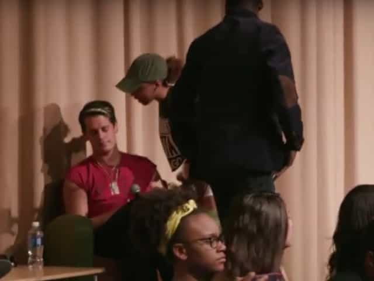

is an aspiring philosopher king, living the dream, travelling the world, hoarding FRNs and ignoring Americunts. He is a European at heart, lover of Latinas, and currently residing in the USA.


There has been a dangerous and troublesome trend of increasing censorship in the west. In the wake of the Second World War, it became criminal to speak certain things about the war, question details of the holocaust, or possess Nazi memorabilia. In 1990, France passed the Gayssot Act, making it illegal to question whether Nazi leaders committed crimes against humanity.
Germany bans usage of the SS Sig runes, and the rock band Kiss was forced to create a new logo that they use exclusively in Germany, so as not to bring down the wrath of the police state on them, as their actual logo may resemble the SS enough to trigger someone to create a fourth Reich and stampede across Europe.
America passed a law in 1994 which provides for stricter penalties if a crime is deemed a “hate crime.” In the early 2000s, we saw the use of “Free Speech Zones,” which are basically a way of outlawing political protest, by saying protest cannot occur freely and organically, but instead only within a specifically designed and cordoned off area designated by the authorities (that is typically blocks or even miles away from the event or person being protested).
Free Speech Zone at 2004 DNC
The Obama administration has increased police power to restrict speech and make arrests. Expect these powers to be exercised in the upcoming presidential election. The world is heading towards an Orwellian police state, and recent events reveal an acceleration of censorship. Here are a list of some of the most egregious censorship incidents so far this year.
Dangerous speech which can harm vulnerable minds
In April of this year, a massive triggering of emotionally unstable and coddled automatons occurred when students left the safe space of their cell-like dorm rooms and ventured outside to be confronted with violent messages scrawled in chalk across their sidewalks, forcing ideas into their tightly sealed minds such as “Make DePaul Great Again” and “Trump Train.” After much weeping and gnashing of teeth, the university decided the only answer to combat the foe of different ideas such as “being great” was to ban chalk from campus.
I'm banned on @facebook for a month for saying Facebook is censoring conservatives. pic.twitter.com/oKStHdEGNM
— Lauren Southern (@Lauren_Southern) May 21, 2016
Journalist and author Lauren Southern made a posting saying Facebook banned the account of one of her friends, which she called “utterly insane.” In response, she was banned from Facebook for 30 days. After media attention and in the wake of widespread allegations that Facebook censors conservative speech, the ban was removed hours after articles were published on Drudge Report and Infowars calling attention to the ban. Facebook said she had been banned “in error.”
Southern did nothing other than point out that her friend was banned from the service. This does not even rise to the level of dissent, but merely discussion factual things that Facebook indeed did. If I had a Facebook account, I’m sure this article alone is enough to ban me from the service.
Conservative blogger and Breitbart Tech editor Milo Yiannopoulos launched a speaking tour of American Universities earlier this year. Several of these events were interrupted, most famously the Trigglypuff event at UMass Amherst in April, where speakers were prevented from talking for several minutes, while profanity-laden outburst were yelled at them by triggered feminists, including the “Fuck You! Keep Your Hate Speech Off Our Campus!” intellectual now known as Triggypuff.

In May, a speech at Chicago’s DePaul University was cancelled after protestors stormed the stage and police refused to intervene and restore order.
Court to Hodge: Your presence here is triggering me
Although the first amendment to the US Constitution prohibits the government from restricting free speech, specifically stating that “Congress shall make no law… abridging the freedom of speech, or of the press, or of the right of the people peaceably to assemble…”, it upheld exactly such a law in May when it turned down an appeal by Harold Hodge, arrested for silently protesting outside the Court Plaza. Hodge had silently carried an anti-racism sign and was arrested for attempting to “intimidate or influence” the court. The message is simple: dissent will not be tolerated.
Racist, mysoginist cis scum
In April, Scotland police arrested a man from Coatbridge in North Lanarkshire after he posted an online video of his dog raising his paw as if making a Nazi salute, in front of footage of Adolf Hitler. DI David Cockburn stated “Posting offensive material…will not be tolerated and police will act swiftly to tackle hate crimes… this clip has been shared and viewed online, which ultimately has caused offence and hurt to many people in our community.” The video is only mildly funny, and was merely an attempt by this man of teasing his girlfriend. As of the time of publication, the video had just under 2 million views, with 29,500 likes and 1,800 dislikes.
As he states in the video introduction: “My girlfriend is always ranting and raving about how cute and adorable her wee dog is, so I thought I would [unintelligible] the least cute thing I could think of, which is a Nazi.” By his own admission in the video itself, the man explains that he is choosing the subject of Nazis precisely because they are a disturbing and unpleasant thing to contrast against the “cute” image of the dog, and of course is in no way supporting or condoning Nazism. Basically, the man was arrested because he hurt the feelings or offended someone, which is the new standard of hate crime. Of course, authorities will pick and choose what “offenses” to prosecute, as there are videos with far more negative content or higher dislikes than this video (1,800), which went viral and gained international attention.
They forgot “Nazi”
A group of international meetups was planned for ROK readers on February 6 in 160 cities across 43 countries. The goal was for like minded men to meet each other, form friendships, and provide male bonding in a culture that views male spaces and masculinity as dangerous and repulsive.
The backlash to allowing men to congregate together was so violent and swift, that opposition from local police chiefs to national government leaders mobilized rapidly to prevent men from meeting together. They were labeled rapists, fascists, homophobes, and sexists, and the meetup was soon cancelled. Dozens of media outlets parroted the story that a group of rapists was coming to town, beware! Note than any attempt at male bonding is shunned and attacked as criminal, while women’s only groups are encouraged and lauded as brave.
Free speech is a myth in the west. We are not free to protest our political leaders. We are not free to express unpopular or traditional ideas, despite the fact that they are often simply the status quo throughout all recorded history. We are not free to congregate together in public or form groups with like minded ideals.
The second half of 2016 should see more violence against political protesters, more shunning of masculine ideas and labeling traditional or masculine values as criminal, and more marginalization of any male-friendly spaces or media outlets.
 If you like this article and are concerned about the future of the Western world, check out Roosh's book Free Speech Isn't Free. It gives an inside look to how the globalist establishment is attempting to marginalize masculine men with a leftist agenda that promotes censorship, feminism, and sterility. It also shares key knowledge and tools that you can use to defend yourself against social justice attacks. Click here to learn more about the book. Your support will help maintain our operation.
If you like this article and are concerned about the future of the Western world, check out Roosh's book Free Speech Isn't Free. It gives an inside look to how the globalist establishment is attempting to marginalize masculine men with a leftist agenda that promotes censorship, feminism, and sterility. It also shares key knowledge and tools that you can use to defend yourself against social justice attacks. Click here to learn more about the book. Your support will help maintain our operation.
Don’t Miss: The Ideology That Can Soundly Defeat Liberalism Is Patriarchal Nationalism